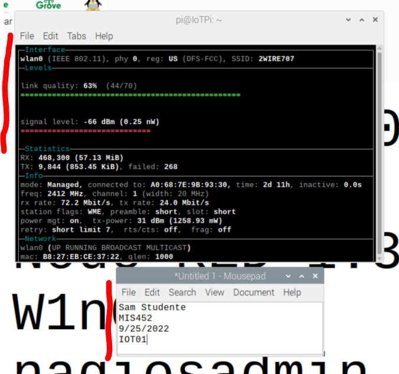

These instructions will show you how to use WaveMon on a Raspberry Pi.
This software allows you to monitor local wireless networks available to a Raspberry Pi.
More information on WaveMon is available online.
Being able to use this software will greatly simplify working with the Raspberry Pi to find available wireless networks.
After completing this assignment you will be able to:
- Run WaveMon
- Interpret the results produced by WaveMon
When you encounter technical issues, please first review IOT00.
This assignment reviews basic computer concepts that you will need in this course and throughout your career.
You are expected to have a working knowledge of SBC hardware and software.
If you do not understand how to use an item, perform a Google Search,
refer to the WSU Technology Knowledge Base, ask a teaching assistant, or ask the instructor.
Take a screenshot with WaveMon running in F1-info mode to document your work.
Note: this can be done using the Snipping Tool if you are running VNC, or use the scrot command if you are connected to the Raspberry Pi with a keyboard and mouse.
- On the Raspberry Pi desktop, open the text editor and enter the following information:
Your Name
Your Class
Todays Date
IOT04
- On the Raspberry Pi, position the wavemon F1-Info window next the text editor on the desktop.
- Take a screenshot.
- On your laptop save the screenshot as "IOT04" in your '
Sample Screenshot
(50) 1. Upload your screenshot to the 'IOT04' D2L Assignment Folder.
(10) 4. Assignment submission